mini2440 + FPGA: บันทึกการพัฒนา Embedded Linux, Debian, Qt และ Local Bus Interface
แล็บบันทึกการทดลองฮาร์ดแวร์และการพัฒนา Embedded System
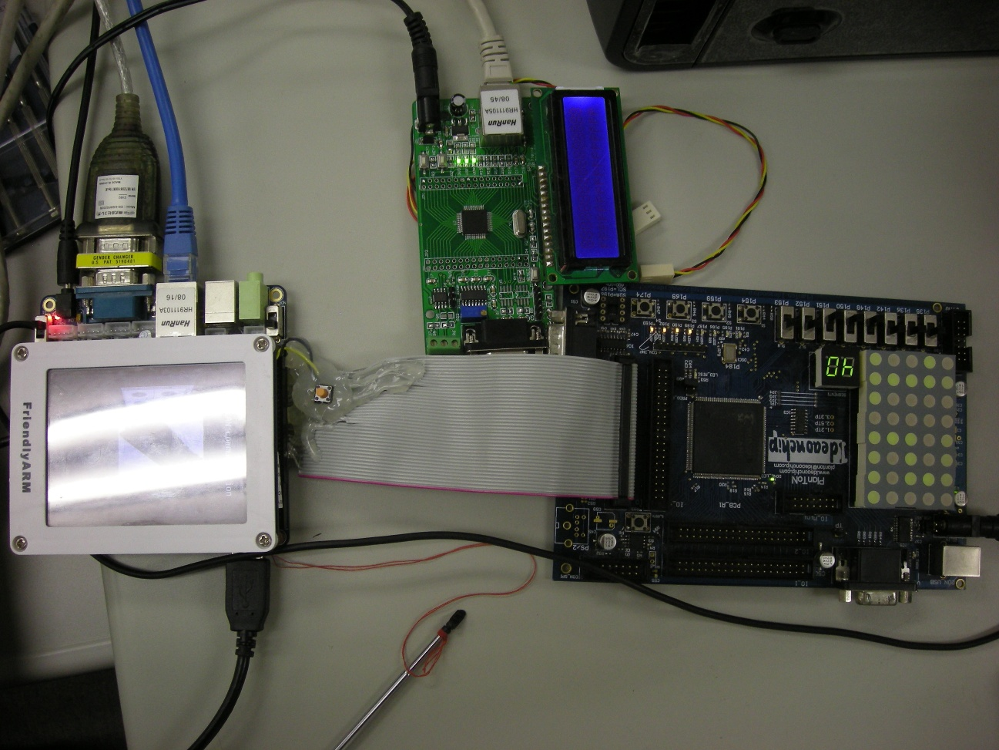
นานมาแล้ว ผู้เขียนเคยซื้อบอร์ด mini2440 มาเล่น และนำไปต่อกับ FPGA ผ่าน Local bus ของบอร์ด โดยลงมือทำตั้งแต่ต้นจนจบ ทั้งการคอมไพล์ Linux kernel, ติดตั้ง Debian, port Qt ไปจนถึงเขียนโปรแกรมควบคุม FPGA และเขียนลอจิกฝั่ง FPGA เอง
ปัจจุบันการสร้าง Embedded Linux ส่วนใหญ่หันไปใช้ Yocto กันแล้ว แต่ผู้เขียนเห็นว่าเนื้อหาชุดนี้ยังมีประโยชน์ ในแง่ความเข้าใจพื้นฐานว่าแต่ละชิ้นส่วนประกอบกันอย่างไร อีกอย่างคืออยากเก็บสิ่งที่เคยทำไว้ในที่ที่เปิดดูได้ง่าย จะได้ไม่ต้องไปรื้อหาในเครื่องตัวเองทุกครั้งที่อยากย้อนดูวิธีเก่า ๆ
คำเตือน
เนื้อหาในเอกสารนี้ค่อนข้างเก่า (Ubuntu 8.10, Debian lenny, Qt 4.6 ฯลฯ) อาจนำไปอ้างอิงกับงานปัจจุบันไม่ได้แล้ว
นอกเรื่องผู้เขียนจำได้ว่าเคยนำ Android ลงบน mini2440 แล้วควบคุม FPGA ได้ด้วย แต่โน้ตวิธีทำหายไปแล้ว เหลือเพียงคลิปนี้ ^_^
เอาละครับ มาเริ่มกันเลย
1 การเตรียมสภาพแวดล้อม
การพัฒนาครั้งนี้ใช้ Ubuntu 8.10 บน Windows สามารถรันได้ผ่านโปรแกรม VirtualBox
⚠️ หมายเหตุ — ความหมายของสัญลักษณ์ $ และ # บน Ubuntu
| Prompt | ผู้ใช้ | ความหมายของ ~/ |
|---|---|---|
$ |
user ทั่วไป | /home/<ชื่อผู้ใช้> |
# |
root | /root/ |
เมื่อพิมพ์คำสั่งต่อไปนี้ ให้สังเกตสัญลักษณ์ที่ระบุในเอกสารนี้ให้ดี
1.1 สร้างผู้ใช้ root บน Ubuntu
ต้องใช้ผู้ใช้ root ตอนสร้าง Debian file system เปิด Ubuntu แล้วคลิก Application → Accessories → Terminal จะได้ console จากนั้นสร้างรหัสผ่าน root ด้วยคำสั่งต่อไปนี้
$ sudo passwd root
[sudo] password for mini2440: ← ป้อนรหัสผ่านที่ตั้งตอนติดตั้ง
Enter new UNIX password: ← ตั้งรหัสผ่านของ root
Retype new UNIX password:
passwd: password updated successfully1.2 ติดตั้งแพ็กเกจ apt-get ที่จำเป็น
ติดตั้งแพ็กเกจ apt-get ต่อไปนี้ใน console
sudo apt-get update
sudo apt-get install build-essential
sudo apt-get install git-core
sudo apt-get install zlib1g-dev
sudo apt-get install libsdl-console-dev
sudo apt-get install debootstrap
sudo apt-get install cvs
sudo apt-get install cvsnt
sudo apt-get install libtool
sudo apt-get install automake1.3 ติดตั้ง cross compiler
mini2440 ใช้ชิป ARM จึงต้องมี cross compiler เปิด console พิมพ์ su แล้วใส่รหัสผ่าน root จากนั้นพิมพ์คำสั่งต่อไปนี้
$ su
Password:
# cd /opt
# wget http://qtextended.org/downloads/toolchains/arm920t-eabi.tgz → ดาวน์โหลด cross compiler
# tar xzvf arm920t-eabi.tgz -C /กด Ctrl+D เพื่อออกจาก root แล้วเพิ่ม PATH ด้วย user ปกติ
echo "export PATH=$PATH:/opt/toolchains/arm920t-eabi/bin" >> .bashrcจากนั้นปิด console แล้วเปิดใหม่ พิมพ์ arm-angstrom-linux-gnueabi-gcc -v ถ้าแสดงผลดังภาพด้านล่างถือว่าใช้ได้
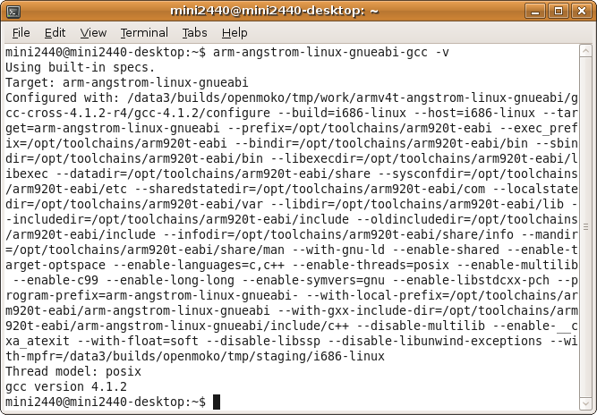
2 การคอมไพล์ U-boot และการเขียนลงบอร์ด
2.1 ดาวน์โหลด source ของ U-boot
cd ~/
mkdir uboot
cd uboot
git clone git://repo.or.cz/u-boot-openmoko/mini2440.git2.2 คอมไพล์ U-boot
export CROSS_COMPILE=arm-angstrom-linux-gnueabi-
cd mini2440
make mini2440_config
make allจะได้ไฟล์ u-boot.bin
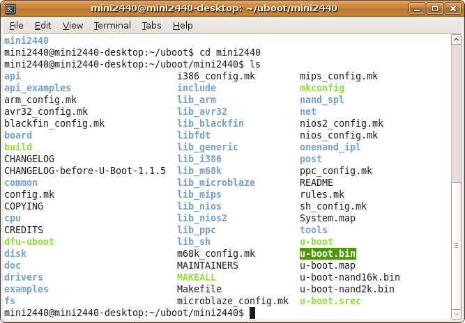
2.3 เขียน U-boot ลง mini2440
Enter your selection: ให้กด q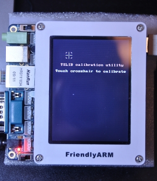
240500 คือขนาดไฟล์ ให้ใส่ค่าที่ตรงกับไฟล์ของตนเอง) Supervivi> load flash 0 240500 u → 240500 คือขนาดไฟล์ ให้ใส่ค่าที่ตรงกับไฟล์ของตนเองDNW.exe แล้วเลือก USB Port → Transmit/Restore เพื่อส่งไฟล์ u-boot.bin ที่คอมไพล์ไว้(ดาวน์โหลด DNW.exe ได้ที่ http://www.csun.co.jp/hpgen/HPB/entries/1.html)
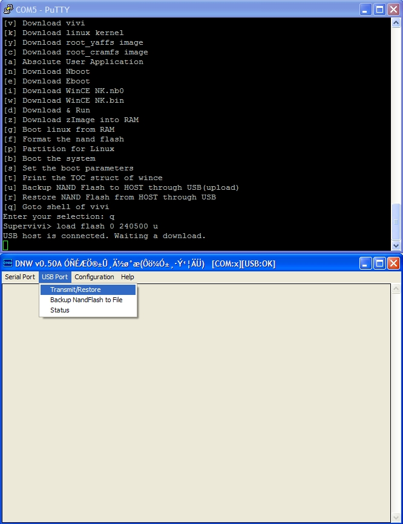
nand scrub และ nand createbbt เพื่อสร้าง bbt (Bad Block Table)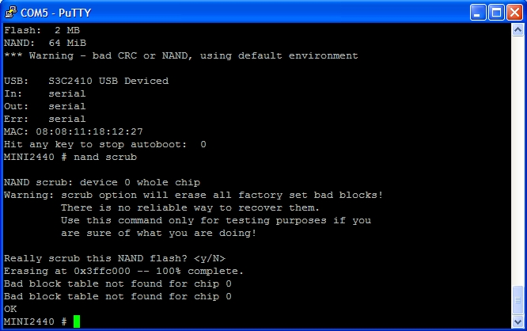
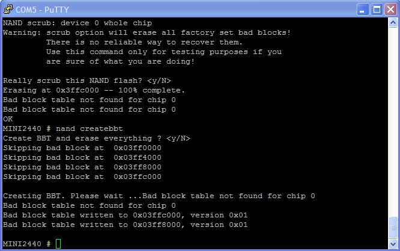
⚠️ ข้อควรระวัง — การรัน nand scrub และ nand createbbt จะลบข้อมูลใน NAND Flash ทั้งหมด จึงต้องตั้ง boot mode เป็น NOR Flash อีกครั้ง แล้วเขียน u-boot.bin ใหม่ จากนั้นจึงเปลี่ยน boot mode กลับเป็น NAND Flash
MINI2440 # dynenv set 40000
MINI2440 # saveenv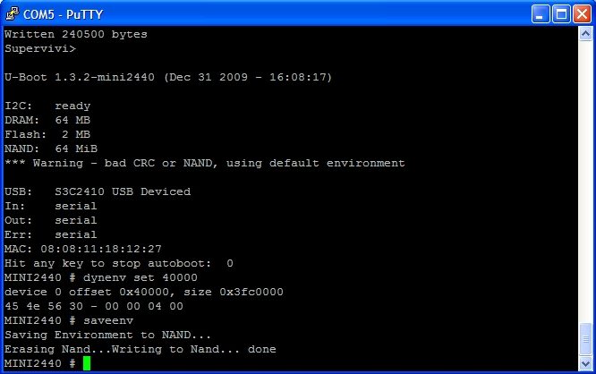
3 การคอมไพล์ Linux kernel (uImage)
3.1 ดาวน์โหลด source ของ kernel
cd ~/
mkdir kernel
cd kernel
git clone git://repo.or.cz/linux-2.6/mini2440.git
cd mini2440source ของ kernel มีบั๊ก ให้เปิดไฟล์ drivers/video/fbmem.c แล้วเพิ่ม return 0; ต่อจาก case FBIOPUT_VSCREENINFO:
gedit drivers/video/fbmem.c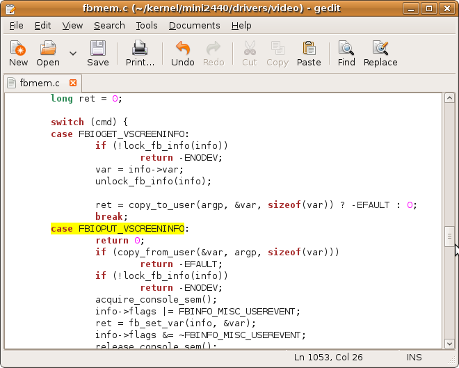
3.2 คอมไพล์ kernel
คอมไพล์ kernel ใน console
cd ~/kernel/mini2440
mkdir -p ../kernel-bin
CROSS_COMPILE=arm-angstrom-linux-gnueabi- ARCH=arm make O=../kernel-bin/ mini2440_defconfig
CROSS_COMPILE=arm-angstrom-linux-gnueabi- ARCH=arm make O=../kernel-bin/จากนั้นสร้าง lib modules (ใช้ตอนสร้าง Debian file system)
mkdir -p ../kernel-modules
CROSS_COMPILE=arm-angstrom-linux-gnueabi- ARCH=arm make O=../kernel-bin/ INSTALL_MOD_PATH=../kernel-modules modules_install3.3 แปลงเป็น uImage
kernel ที่คอมไพล์ได้เป็น zImage แต่การใช้งานร่วมกับ u-boot ต้องแปลงเป็น uImage
~/uboot/mini2440/tools/mkimage -A arm -O linux -T kernel -C none -a 0x30008000 -e 0x30008000 -d ../kernel-bin/arch/arm/boot/zImage uImage4 การสร้าง Debian file system
4.1 เตรียม SD card
ใช้ SD card ขนาด 2GB และฟอร์แมตดังนี้
| Partition | File system | ขนาด | ใช้เก็บ |
|---|---|---|---|
| 1 | FAT32 | 512MB | uImage |
| 2 | ext3 | 1GB | root file system |
| 3 | linux-swap | ส่วนที่เหลือ | swap |
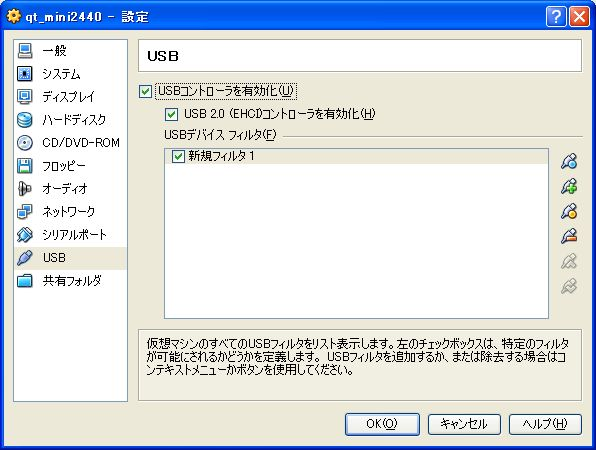
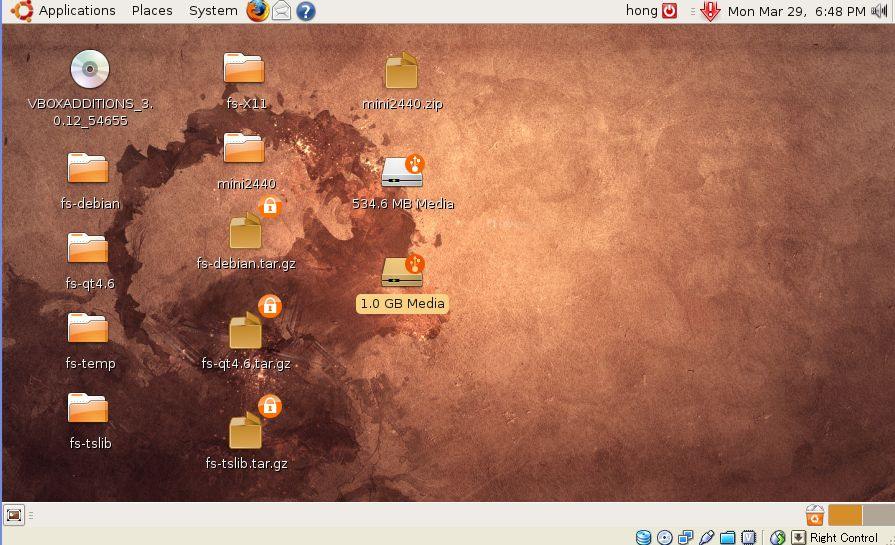
sudo apt-get install gparted/dev/sdd (แตกต่างกันไปตามเครื่อง ให้เลือกอุปกรณ์ของ SD card ตนเอง)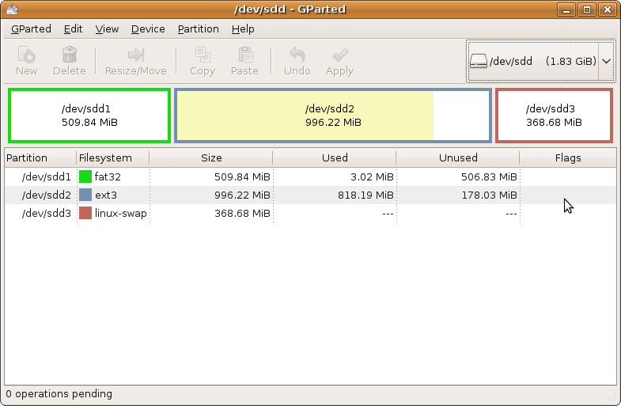
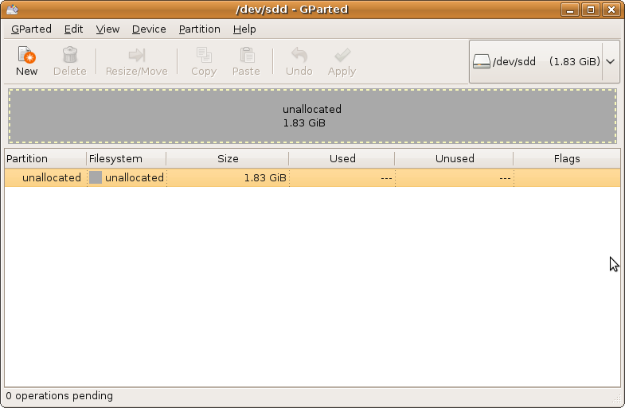
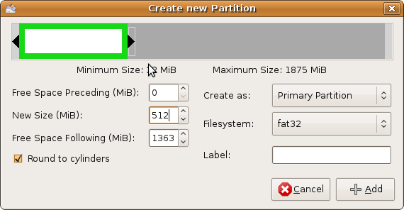
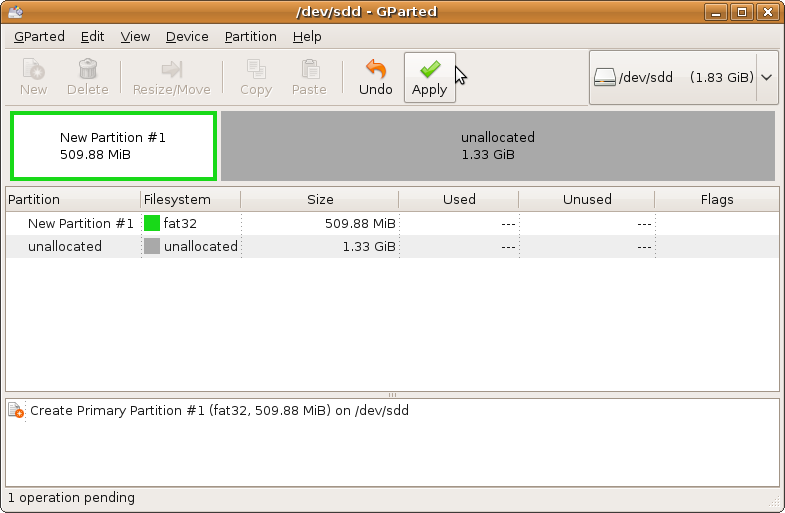
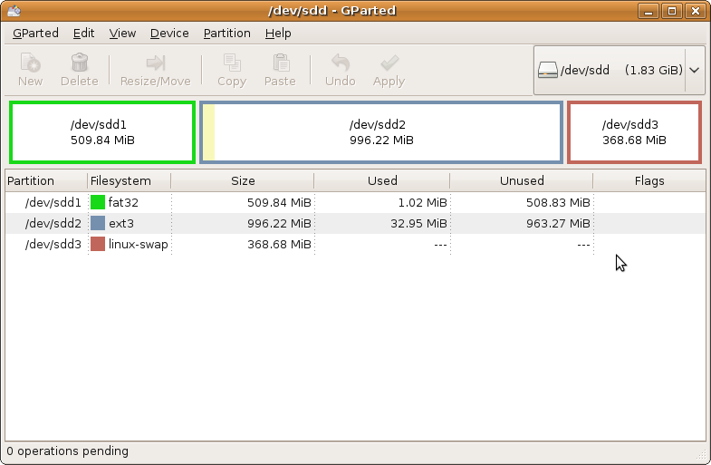
⚠️ หมายเหตุ — SD card แบบ SDHC ยังไม่รองรับ หากต้องการใช้ SDHC ต้องใช้ patch ของ u-boot โดยก่อนรัน make all ในขั้นตอนคอมไพล์ u-boot ให้ทำดังนี้
patch -p1 < s3c24xx_mci_SDHC.patch
make all4.2 ติดตั้ง file system
ดาวน์โหลด Debian file system
mkdir ~/armel-rootfs
sudo debootstrap --arch=armel --include=ifupdown,udev,procps,netbase,vim-tiny,module-init-tools,wget,openssh-server,screen,apmd --foreign lenny ~/armel-rootfs http://ftp.de.debian.org/debian
cd ~/armel-rootfs
tar cfjv ../armel-rootfs.tar.bz2 *
cd ..สร้างจุด mount
sudo mkdir /mnt/sdb1
sudo mkdir /mnt/sdb2คัดลอก uImage ไปที่ Partition 1 ของ SD card (Windows FAT32)
sudo mount /dev/sdd1 /mnt/sdb1
sudo cp ~/kernel/mini2440/uImage /mnt/sdb1
syncคัดลอก armel-rootfs ที่ดาวน์โหลดไว้ไปที่ Partition 2 (Linux ext3)
sudo mount /dev/sdd2 /mnt/sdb2
cd /mnt/sdb2
sudo tar -xpjvf ~/armel-rootfs.tar.bz2
syncคัดลอก lib modules ไปที่ Partition 2 (Linux ext3)
sudo cp -Rp ~/kernel/kernel-modules/lib/* /mnt/sdb2/lib
sync
cd /ตั้งค่าสภาพแวดล้อมด้วยคำสั่งต่อไปนี้
$ su
# cd /mnt/sdb2
# echo "proc /proc proc none 0 0" >> etc/fstab
# echo "mini2440" > etc/hostname
# echo '127.0.0.1 localhost.localdomain localhost' > etc/hosts
# mknod dev/console c 5 1
# echo 'deb http://ftp.de.debian.org/debian lenny main' > etc/apt/sources.list
# cd /
# umount /mnt/sdb1
# umount /mnt/sdb2ถอด SD card แล้วเสียบเข้า mini2440 เปิดเครื่อง แล้วตั้งค่าใน Tera Term ดังนี้
MINI2440 # setenv bootcmd 'mmcinit ; fatload mmc 0:1 0x31000000 uimage ; bootm 0x31000000'
MINI2440 # setenv bootargs 'console=ttySAC0,115200 noinitrd root=/dev/mmcblk0p2 rootwait=4 rw ip=dhcp init=/bin/sh'
MINI2440 # bootLinux จะบูตขึ้นมา รอจนขึ้น sh-3.2# แล้วพิมพ์คำสั่งต่อไปนี้
sh-3.2# mount /proc /proc -t proc
sh-3.2# export PATH=/usr/local/sbin:/usr/local/bin:/usr/sbin:/usr/bin:/sbin:/bin
sh-3.2# /debootstrap/debootstrap --second-stage
I: Installing core packages...
I: Unpacking required packages...
I: Unpacking libacl1...
I: Unpacking libattr1...
..................
..................
sh-3.2# ← รอจนกลับมาที่ prompt นี้ปิดเครื่อง mini2440 แล้วเสียบ SD card เข้าพีซีอีกครั้ง
$ sudo mount /dev/sdd2 /mnt/sdb2
$ su
# cd /mnt/sdb2
# mknod dev/ttySAC0 c 204 64
# echo ttySAC0 >> etc/securetty
# printf "T0:123:respawn:/sbin/getty 115200 ttySAC0\n" >> etc/inittab
# printf "auto eth0\niface eth0 inet dhcp\n" >> etc/network/interfaces
# printf "nameserver 192.168.1.1" >> etc/resolv.conf
# cd /
# umount /mnt/sdb2ถอด SD card จากพีซีแล้วเสียบกลับเข้า mini2440 เปิดเครื่อง แล้วตั้งค่าพารามิเตอร์ของ u-boot ดังนี้
MINI2440 # setenv bootcmd 'mmcinit ; fatload mmc 0:1 0x31000000 uimage ; bootm 0x31000000'
MINI2440 # setenv bootargs 'console=ttySAC0,115200n8 rootdelay=3 root=/dev/mmcblk0p2 rw rootfstype=ext3 rootwait=4'
MINI2440 # saveenv → บันทึกพารามิเตอร์
MINI2440 # boot → บูตรอจนขึ้นข้อความด้านล่าง แล้วล็อกอินด้วย root ก็จะใช้งาน Linux ได้
...................................................
Debian GNU/Linux 5.0 mini2440 ttySAC0
mini2440 login:กรณีขึ้นคำเตือน .udev/ already exists on the static /dev! (warning). ตอนบูต
เสียบ SD card เข้าพีซี แล้วรันคำสั่งต่อไปนี้บน Ubuntu คำเตือนจะหายไป
sudo mount /dev/sdd2 /mnt/sdb2
sudo rm -Rf /mnt/sdb2/dev/.udev
sudo umount /mnt/sdb2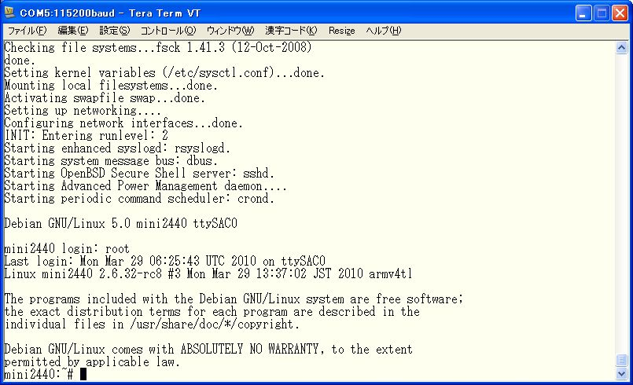
ตรวจสอบ Swap
ใช้คำสั่ง free ตรวจสอบว่ามี Swap หรือไม่
mini2440:~# freeถ้าไม่มี Swap ให้หา partition swap ของ SD card ด้วย fdisk -l แล้วเปิดใช้งาน Swap
mini2440:~# fdisk -l
mini2440:~# mkswap /dev/mmcblk0p3 → สร้าง Swap
mini2440:~# swapon /dev/mmcblk0p3 → เปิดใช้งาน Swap
mini2440:~# free → ตรวจสอบ Swap อีกครั้ง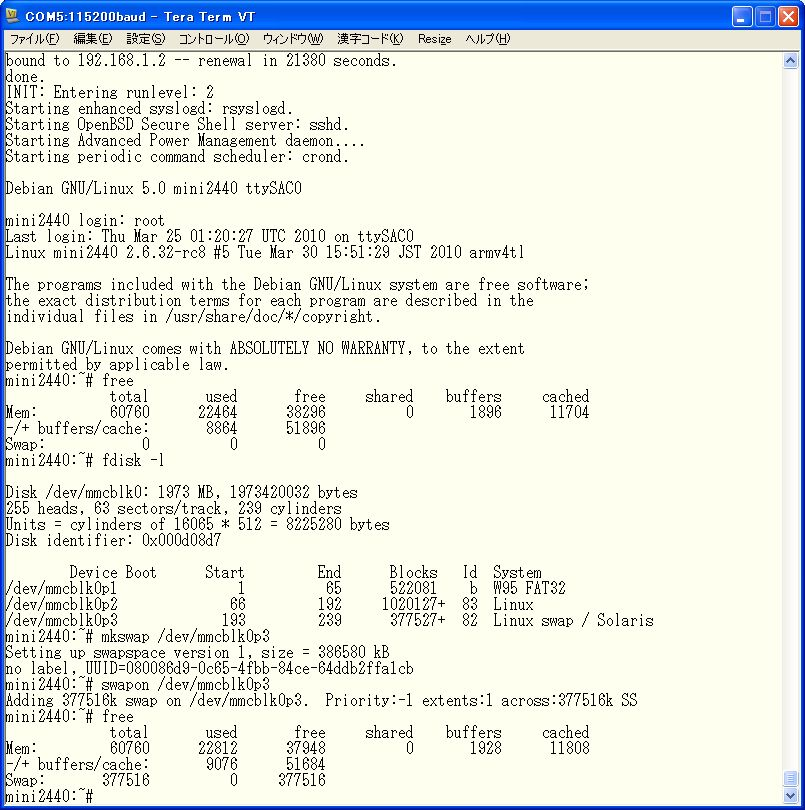
5 บูตจากเครือข่าย (Network boot)
ระหว่างพัฒนา การบูตจากเครือข่ายได้จะสะดวกมาก ดังนั้นในที่นี้จะติดตั้ง TFTP server และ NFS server แล้วให้ดาวน์โหลด uImage และ file system จากเซิร์ฟเวอร์เพื่อบูต
ก่อนอื่น เปลี่ยนการตั้งค่าเครือข่ายของ VirtualBox เป็น "Bridged Adapter" (ตัวแปลงบริดจ์)
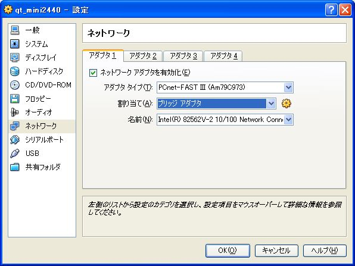
หลังเปลี่ยนแล้ว ให้ตรวจสอบ IP address ด้วย ifconfig
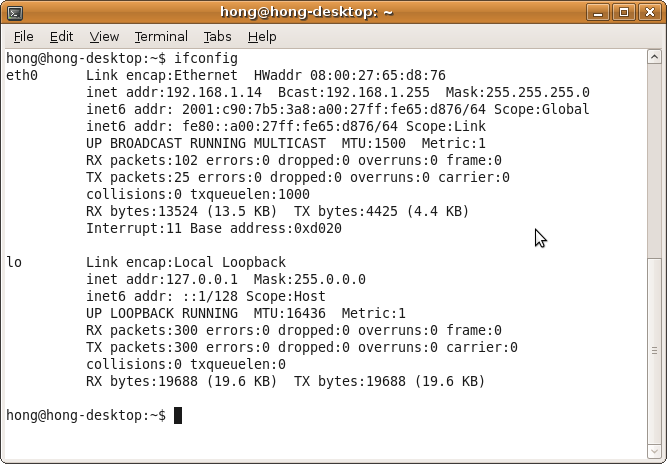
4.3 ติดตั้ง tftp server
ใน console ของ Ubuntu
sudo apt-get install xinetd tftpd tftpสร้างไฟล์ /etc/xinetd.d/tftp (sudo gedit /etc/xinetd.d/tftp) แล้วเขียนเนื้อหาดังนี้
service tftp
{
protocol = udp
port = 69
socket_type = dgram
wait = yes
user = nobody
server = /usr/sbin/in.tftpd
server_args = /tftpboot
disable = no
}สร้างไดเรกทอรี /tftpboot แล้วคัดลอก uImage ไปไว้ที่นั่น
sudo mkdir /tftpboot
sudo chmod -R 777 /tftpboot
sudo chown -R nobody /tftpboot
cp ~/kernel/mini2440/uImage /tftpboot/4.4 ติดตั้ง nfs server
ใน console ของ Ubuntu
sudo apt-get install nfs-kernel-server nfs-common portmapสร้างไดเรกทอรี /nfs/home แล้วคัดลอก Debian file system ไปไว้ที่นั่น
sudo mkdir -p /nfs/home
sudo chown nobody:nogroup /nfs/home
sudo chmod 777 /nfs
sudo chmod 777 /nfs/homeเพิ่มบรรทัดต่อไปนี้ลงในไฟล์ /etc/exports (sudo gedit /etc/exports)
/nfs/home 192.168.1.0/255.255.255.0(rw,sync,no_root_squash,no_subtree_check)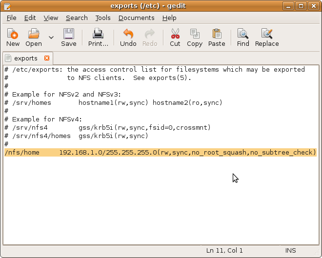
sudo exportfs -aคัดลอก Debian file system จาก SD card ไปที่ /nfs/home
sudo mount /dev/sdd2 /mnt/sdb2
cd /mnt/sdb2
sudo cp -Rpf * /nfs/home/4.5 ตั้งค่าการบูตจากเครือข่าย
แก้ไขไฟล์ /nfs/home/etc/network/interfaces (sudo gedit /nfs/home/etc/network/interfaces) ดังนี้
auto eth0
#iface eth0 inet dhcp
iface eth0 inet manual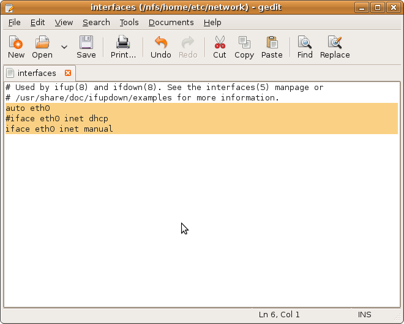
เริ่มการทำงานของ TFTP และ NFS server
sudo /etc/init.d/xinetd restart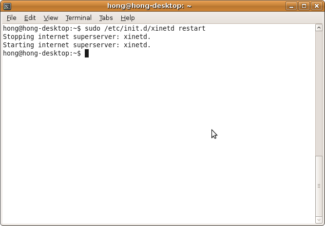
ตรวจสอบ IP address ของ Ubuntu ด้วย ifconfig แล้วตั้งพารามิเตอร์ network boot ของ u-boot
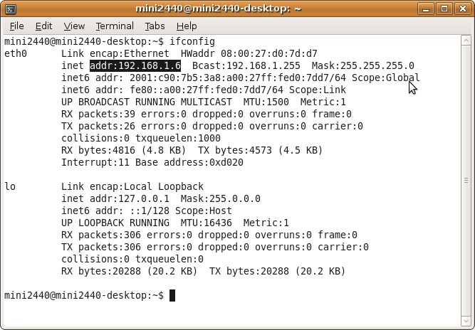
เปิดเครื่อง mini2440 แล้วตั้งพารามิเตอร์ดังนี้ (เปลี่ยน IP address ให้ตรงกับของตนเอง)
MINI2440 # setenv ipaddr 192.168.1.15 → ระบุ IP ของ mini2440 (ให้ตรวจสอบล่วงหน้าว่า IP นี้ยังไม่ถูกใช้)
MINI2440 # setenv gatewayip 192.168.1.1
MINI2440 # setenv bootcmd 'tftpboot 0x31000000 192.168.1.6:uImage ; bootm 0x31000000'
MINI2440 # setenv bootargs 'console=ttySAC0,115200 noinitrd init=/sbin/init mini2440=0tb root=/dev/nfs rw nfsroot=192.168.1.6:/nfs/home ip=dhcp'
MINI2440 # saveenv
MINI2440 # bootuImage จะถูกดาวน์โหลดจาก TFTP server ส่วน file system จะถูกดาวน์โหลดจาก NFS
โครงสร้างการตั้งค่าปัจจุบันเป็นดังนี้
5 การ port Qt
ตั้งแต่หัวข้อนี้จนจบเอกสาร จะใช้ TFTP และ NFS server เพื่อให้พัฒนาได้สะดวก ดังนั้น root ของ mini2440 คือ /nfs/home บน Ubuntu
5.1 ติดตั้งไลบรารี touch panel
เปิดเครื่อง mini2440 แล้วพิมพ์คำสั่งต่อไปนี้ใน Tera Term
ตรวจสอบ sources.list ว่ามีบรรทัด deb http://ftp.de.debian.org/debian lenny main หรือไม่
mini2440:~# cat /etc/apt/sources.listถ้ายังไม่มีบรรทัดดังกล่าว ให้เพิ่มด้วยคำสั่งนี้
mini2440:~# echo 'deb http://ftp.de.debian.org/debian lenny main' >> /etc/apt/sources.listจากนั้นติดตั้งไลบรารี touch ด้วยคำสั่งต่อไปนี้
mini2440:~# apt-get update
mini2440:~# apt-get install xserver-xorg-input-tslib
mini2440:~# apt-get install libts-binเมื่อเสร็จแล้วให้รีบูต หนึ่งครั้ง แล้วพิมพ์คำสั่งต่อไปนี้เพื่อทดสอบ touch panel
mini2440:~# export TSLIB_TSEVENTTYPE=input
mini2440:~# export TSLIB_CONSOLEDEVICE=none
mini2440:~# export TSLIB_FBDEVICE=/dev/fb0
mini2440:~# export TSLIB_TSDEVICE=/dev/input/event1
mini2440:~# export TSLIB_CALIBFILE=/etc/pointercal
mini2440:~# export TSLIB_CONFFILE=/etc/ts.conf
mini2440:~# export TSLIB_PLUGINDIR=/usr/lib/ts
mini2440:~# ts_calibrateถ้าใช้คำสั่ง ts_calibrate ได้แล้ว ให้เพิ่มเนื้อหาของ export ข้างต้นลงในไฟล์ /etc/profile เพื่อให้ใช้ ts_calibrate ได้โดยไม่ต้อง export ทุกครั้ง
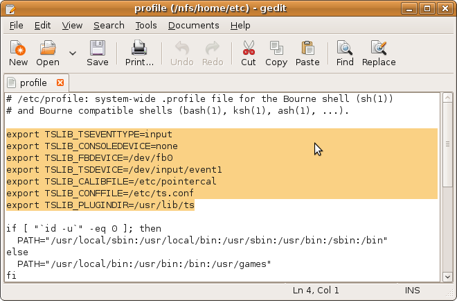
5.2 ดาวน์โหลดและคอมไพล์ Qt
การคอมไพล์ Qt ต้องมีไลบรารี touch ก่อน ให้ดาวน์โหลดและคอมไพล์ tslib
(ตัวที่คอมไพล์ในขั้นตอนนี้ไม่ได้ถูกนำไปใช้งานจริง แต่จำเป็นตอนคอมไพล์ Qt ส่วนไลบรารี touch ที่ใช้งานจริงคือตัวที่ติดตั้งด้วย apt-get install xserver-xorg-input-tslib และ apt-get install libts-bin)
$ cd ~/
$ mkdir tslib
$ cd tslib
$ export CVSROOT=:pserver:anoncvs@cvs.handhelds.org:/cvs
$ cvs login ← รหัสผ่านคือ anoncvs
$ cvs co apps/tslib
$ export ac_cv_func_malloc_0_nonnull=yes
$ cd ~/tslib/apps/tslib
$ ./autogen.sh
$ CC=arm-angstrom-linux-gnueabi-gcc CXX=arm-angstrom-linux-gnueabi-g++ ./configure --build=i386-linux --host=arm-linux --target=arm --disable-inputapi --prefix=$PWD/build
$ make
$ make installดาวน์โหลด source ของ Qt
cd ~/
mkdir qt4.6
cd qt4.6
wget http://get.qt.nokia.com/qt/source/qt-everywhere-opensource-src-4.6.0.tar.gz
tar xvzf qt-everywhere-opensource-src-4.6.0.tar.gz
cd qt-everywhere-opensource-src-4.6.0ตั้งค่าพารามิเตอร์ในไฟล์ mkspecs/qws/linux-arm-g++/qmake.conf ดังนี้
QMAKE_CC = arm-angstrom-linux-gnueabi-gcc
QMAKE_CXX = arm-angstrom-linux-gnueabi-g++
QMAKE_LINK = arm-angstrom-linux-gnueabi-g++
QMAKE_LINK_SHLIB = arm-angstrom-linux-gnueabi-g++
QMAKE_AR = arm-angstrom-linux-gnueabi-ar cqs
QMAKE_OBJCOPY = arm-angstrom-linux-gnueabi-objcopy
QMAKE_STRIP = arm-angstrom-linux-gnueabi-strip
QMAKE_INCDIR = /home/hong/tslib/apps/tslib/build/include # แก้ให้ตรงกับตำแหน่ง tslib ของตนเอง
QMAKE_LIBDIR = /home/hong/tslib/apps/tslib/build/lib # แก้ให้ตรงกับตำแหน่ง tslib ของตนเอง
LIBS += -lts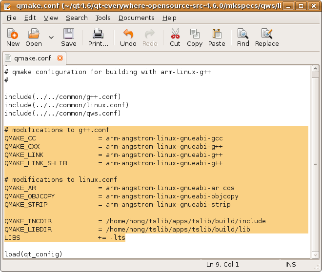
คอมไพล์ Qt
cd ~/qt4.6/qt-everywhere-opensource-src-4.6.0
./configure -embedded arm -xplatform qws/linux-arm-g++ -prefix /usr/local/Qt -qt-mouse-tslib -little-endian -qt-gfx-transformed -qt-gfx-linuxfb -qt-gfx-vnc -qt-kbd-linuxinputระบบจะถามคำถามต่อไปนี้
Type 'c' if you want to use the Commercial Edition.
Type 'o' if you want to use the Open Source Editionตอบ o จากนั้นจะถามต่อ
Type '3' to view the GNU General Public License version 3.
Type 'L' to view the Lesser GNU General Public License version 2.1.
Type 'yes' to accept this license offer.
Type 'no' to decline this license offer.
Do you accept the terms of either license?ตอบ yes
$ make → ใช้เวลานาน (ประมาณ 3 ชั่วโมง)
$ sudo make installผลลัพธ์ที่คอมไพล์แล้วจะถูกติดตั้งไว้ที่ /usr/local/Qt
5.3 ติดตั้ง Qt ลง Debian
export MINI2440FS="/nfs/home"
sudo cp -Rpf /usr/local/Qt $MINI2440FS/usr/local/Qt
sudo cp -p /opt/toolchains/arm920t-eabi/arm-angstrom-linux-gnueabi/lib/libstdc++.so* $MINI2440FS/usr/local/Qt/libเพิ่มบรรทัดต่อไปนี้ลงในไฟล์ $MINI2440FS/etc/profile
export QWS_MOUSE_PROTO=tslib:/dev/input/event1
export QTDIR=/usr/local/Qt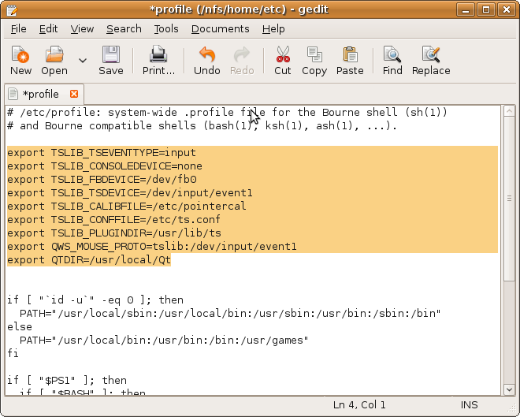
เริ่มการทำงานของ TFTP และ NFS server บน Ubuntu (sudo /etc/init.d/xinetd restart) เปิดเครื่อง mini2440 ตั้งพารามิเตอร์ boot จากเครือข่ายไว้ แล้วบูต จากนั้นพิมพ์ใน Tera Term
mini2440:~# cd /usr/local/Qt/demos/embedded/fluidlauncher
mini2440:/usr/local/Qt/demos/embedded/fluidlauncher# ./fluidlauncher -qwsจะแสดงหน้าจอดังภาพด้านล่าง
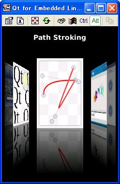
6 สื่อสารกับ FPGA ผ่าน Local bus (Memory Controller) บน Linux
ก่อนอื่นสร้างโฟลเดอร์สำหรับทดสอบ ใน console ของ Ubuntu
mkdir /nfs/home/test6.1 แสดง Hello world
สร้างไฟล์ hello.c โดยมีเนื้อหาดังนี้
#include <stdio.h>
int main(void) {
printf("hello, FriendlyARM!\n");
}คอมไพล์ไฟล์ใน console
arm-angstrom-linux-gnueabi-gcc -o hello hello.cจะได้ไฟล์ hello ให้คัดลอกไปยังโฟลเดอร์ทดสอบบน NFS server
cp hello /nfs/home/test/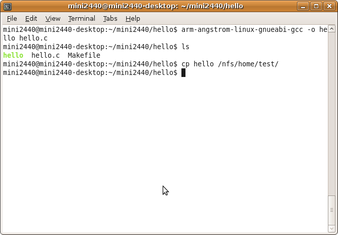
เปิดเครื่อง mini2440
mini2440 login: root → รหัสผ่าน root คือ root
mini2440:~# cd /test
mini2440:/test# ./helloจะแสดงข้อความ hello, FriendlyARM!
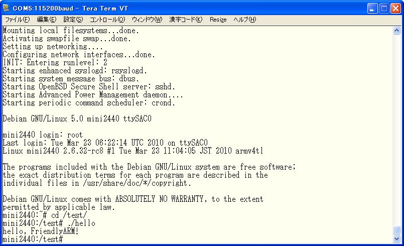
6.2 ลอจิกฝั่ง FPGA สำหรับ Local bus
Local bus ที่ใช้ได้คือ nGCS1, nGCS2, nGCS3 และ nGCS5 ครั้งนี้ใช้ nGCS2 และสื่อสารข้อมูลแบบ 8 บิต สัญญาณที่เชื่อมต่อคือ
| สัญญาณ | รายละเอียด |
|---|---|
| LADDR6 – LADDR1 | address |
| LDATA7 – LDATA0 | data (8 บิต) |
| nGCS2 | chip select |
| LnWE | write enable |
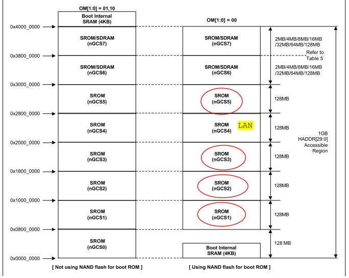
แผนที่ memory map ของ CPU s3c2440 บน mini2440
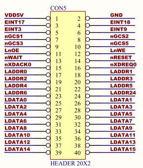
หมายเลขขาของ connector 5 บน mini2440
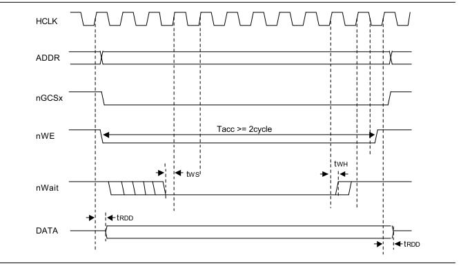
timing diagram ของ Local bus บน CPU s3c2440
โค้ด VHDL ฝั่ง FPGA (โค้ดอย่างง่าย)
library IEEE;
use IEEE.STD_LOGIC_1164.ALL;
use IEEE.STD_LOGIC_ARITH.ALL;
use IEEE.STD_LOGIC_UNSIGNED.ALL;
---- Uncomment the following library declaration if instantiating
---- any Xilinx primitives in this code.
--library UNISIM;
--use UNISIM.VComponents.all;
entity MINI2440 is
Port (
-- system-------------------------------------------
CLK : in std_logic;
RESET_L : in std_logic;
-- bus interface -----------------------------------
DATA : inout std_logic_vector(7 downto 0);
ADDR : in std_logic_vector(6 downto 1);
nGCS2 : in std_logic;
nOE : in std_logic;
nWE : in std_logic;
nRESET : in std_logic;
nWAIT : inout std_logic;
-- LED ---------------------------------------------
LED : out std_logic_vector(7 downto 0)
----------------------------------------------------
);
end MINI2440;
architecture Behavioral of MINI2440 is
signal wLEDDATA0 : std_logic_vector(15 downto 0) := x"0000";
signal wREAD_OUT : std_logic_vector(15 downto 0);
signal wWRITE_EN_DELAY : std_logic_vector(1 downto 0);
begin
process(RESET_L, CLK)
begin
if (RESET_L = '0') then
wWRITE_EN_DELAY <= "00";
elsif (CLK'event and CLK = '1') then
if (nGCS2 = '0') then
if (nWE = '0') then
wWRITE_EN_DELAY <= wWRITE_EN_DELAY(0) & '1';
if (wWRITE_EN_DELAY = "01") then
case ADDR is
when "000000" => wLEDDATA0(7 downto 0) <= DATA; --0x1000_0000
when others =>
end case;
wWRITE_EN_DELAY <= "00";
end if;
else
wWRITE_EN_DELAY <= "00";
end if;
else
wWRITE_EN_DELAY <= "00";
end if;
end if;
end process;
DATA <= wREAD_OUT(7 downto 0) when ((nGCS2 = '0') and (nWE = '1')) else (others => 'Z');
nWAIT <= 'Z';
LED <= wLEDDATA0(7 downto 0);
end Behavioral;ไฟล์ UCF
#PACE: Start of Constraints generated by PACE
#PACE: Start of PACE I/O Pin Assignments
NET "CLK" IOSTANDARD = LVCMOS33;
NET "CLK" LOC = P184;
NET "RESET_L" IOSTANDARD = LVCMOS33;
NET "RESET_L" LOC = P54;
NET "DATA[7]" LOC = P50;
NET "DATA[6]" LOC = P48;
NET "DATA[5]" LOC = P45;
NET "DATA[4]" LOC = P42;
NET "DATA[3]" LOC = P40;
NET "DATA[2]" LOC = P36;
NET "DATA[1]" LOC = P34;
NET "DATA[0]" LOC = P30;
NET "ADDR[6]" LOC = P32;
NET "ADDR[5]" LOC = P28;
NET "ADDR[4]" LOC = P25;
NET "ADDR[3]" LOC = P23;
NET "ADDR[2]" LOC = P20;
NET "ADDR[1]" LOC = P18;
NET "nGCS2" LOC = P4;
NET "nOE" LOC = P6;
NET "nWE" LOC = P9;
NET "nRESET" IOSTANDARD = LVTTL;
NET "nRESET" LOC = P15;
NET "nWAIT" IOSTANDARD = LVTTL;
NET "nWAIT" LOC = P12;
NET "LED[0]" IOSTANDARD = LVTTL;
NET "LED[0]" LOC = P193;
NET "LED[1]" IOSTANDARD = LVTTL;
NET "LED[1]" LOC = P192;
NET "LED[2]" IOSTANDARD = LVTTL;
NET "LED[2]" LOC = P190;
NET "LED[3]" IOSTANDARD = LVTTL;
NET "LED[3]" LOC = P189;
NET "LED[4]" IOSTANDARD = LVTTL;
NET "LED[4]" LOC = P187;
NET "LED[5]" IOSTANDARD = LVTTL;
NET "LED[5]" LOC = P186;
NET "LED[6]" IOSTANDARD = LVTTL;
NET "LED[6]" LOC = P185;
NET "LED[7]" IOSTANDARD = LVTTL;
NET "LED[7]" LOC = P181;
#PACE: Start of PACE Area Constraints
#PACE: Start of PACE Prohibit Constraints
#PACE: End of Constraints generated by PACE
NET "DATA[7]" IOSTANDARD = LVTTL;
NET "DATA[6]" IOSTANDARD = LVTTL;
NET "DATA[5]" IOSTANDARD = LVTTL;
NET "DATA[4]" IOSTANDARD = LVTTL;
NET "DATA[3]" IOSTANDARD = LVTTL;
NET "DATA[2]" IOSTANDARD = LVTTL;
NET "DATA[1]" IOSTANDARD = LVTTL;
NET "DATA[0]" IOSTANDARD = LVTTL;
NET "ADDR[6]" IOSTANDARD = LVTTL;
NET "ADDR[5]" IOSTANDARD = LVTTL;
NET "ADDR[4]" IOSTANDARD = LVTTL;
NET "ADDR[3]" IOSTANDARD = LVTTL;
NET "ADDR[2]" IOSTANDARD = LVTTL;
NET "ADDR[1]" IOSTANDARD = LVTTL;
NET "nGCS2" IOSTANDARD = LVTTL;
NET "nOE" IOSTANDARD = LVTTL;
NET "nWE" IOSTANDARD = LVTTL;6.3 สื่อสารกับ FPGA ผ่าน Local bus
การสื่อสารกับ FPGA ต้องเข้าถึง physical address โดยตรง ลำดับการเข้าถึง physical address มีดังนี้
open ไฟล์ /dev/memmmapmunmapclose ไฟล์ /dev/memลองเขียนโค้ดอย่างง่าย สร้างไฟล์ memtest.c โดยมีเนื้อหาดังนี้
#include<stdio.h>
#include<stdlib.h>
#include<unistd.h>
#include<fcntl.h>
#include<sys/types.h>
#include<sys/mman.h>
#include<sys/stat.h>
#include<asm/page.h>
#include<asm/types.h>
#include <sys/mman.h>
int main(char data)
{
int fd;
char buff[128];
unsigned char *madr;
fd = open("/dev/mem", O_RDWR);
madr = mmap(0, 0x1, PROT_WRITE|PROT_READ, MAP_SHARED, fd, 0x10000000);
buff[0] = *madr;
printf("data: %x \n", *buff);
if (data == 1)
{
*madr = 0x00;
} else
{
*madr = 0xff;
}
munmap(madr, 0x1);
close(fd);
return 0;
}คอมไพล์
arm-angstrom-linux-gnueabi-gcc -o memtest memtest.cรันบน mini2440
mini2440:~# cd /test
mini2440:/test# ./memtest 1 → LED ติด
mini2440:/test# ./memtest → LED ดับ7 สื่อสารกับ FPGA ผ่าน Local bus (Memory Controller) บน Qt
ตั้งค่า PATH เพื่อคอมไพล์ Qt บน Ubuntu
hong@hong-desktop:~$ echo "export PATH=$PATH:~/qt4.6/qt-everywhere-opensource-src-4.6.0/bin" >> .bashrcตรวจสอบว่า PATH ถูกเพิ่มเรียบร้อย
hong@hong-desktop:~$ echo $PATH
/usr/local/sbin:/usr/local/bin:/usr/sbin:/usr/bin:/sbin:/bin:/usr/games:/opt/toolchains/arm920t-eabi/bin:/home/hong/qt4.6/qt-everywhere-opensource-src-4.6.0/binถ้ามี path ของ qt อยู่ท้ายสุด (.../qt-everywhere-opensource-src-4.6.0/bin) ถือว่าใช้ได้
7.1 แสดง Hello world บน Qt
สร้างไฟล์ main.cpp โดยมีเนื้อหาดังนี้
#include <QApplication>
#include <QPushButton>
int main(int argc, char *argv[])
{
printf("Hello word is runing....");
QApplication app(argc, argv);
QPushButton hello("Hello world!");
hello.resize(200, 60);
hello.show();
return app.exec();
}ปิดไฟล์ แล้วรันใน console
qmake -project
qmake
makeจะได้ไฟล์ hello ให้คัดลอกไปยังโฟลเดอร์ทดสอบบน NFS server
cp hello /nfs/home/test/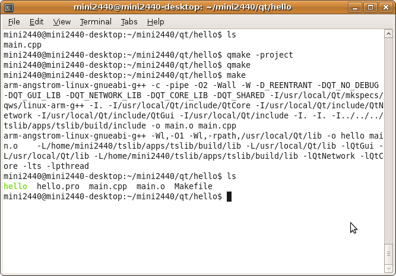
เปิดเครื่อง mini2440 แล้วพิมพ์ใน Tera Term
# cd /test
# ./hello -qwsจะแสดงปุ่ม "Hello world" ตัวอักษรค่อนข้างเล็ก ถ้าเพิ่ม -fn unifont ตัวอักษรจะใหญ่ขึ้น
# ./hello -qws -fn unifont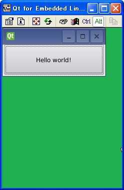
7.2 สื่อสารกับ FPGA ผ่าน Local bus บน Qt
การเข้าถึง physical address บน Qt ทำงานเหมือนบน Linux แต่ Qt ควบคุมไฟล์ด้วย QFile โค้ดมี 3 ไฟล์ ได้แก่ ledsetting.h, ledsetting.cpp และ main.cpp
สร้างโฟลเดอร์ led ก่อน แล้วสร้าง ledsetting.h, ledsetting.cpp, main.cpp ไว้ข้างในดังนี้
ledsetting.h
//ledsetting.h
#ifndef LEDSETTING_H
#define LEDSETTING_H
#include <QWidget>
class LEDsetting : public QWidget
{
Q_OBJECT
public:
LEDsetting(QWidget *parent = 0);
public slots:
void setLED();
void clearLED();
};
#endifledsetting.cpp
//ledsetting.cpp
#include <QFile>
#include "ledsetting.h"
LEDsetting::LEDsetting(QWidget *parent)
: QWidget(parent)
{
}
void LEDsetting::setLED()
{
uchar *madr;
qint64 addr_map = 0x10000000;
qint64 size_map = 0x1;
QFile fd("/dev/mem");
fd.open(QIODevice::ReadWrite);
madr = fd.map(addr_map, size_map);
*madr = 0xff;
fd.unmap(madr);
fd.close();
}
void LEDsetting::clearLED()
{
uchar *madr;
qint64 addr_map = 0x10000000;
qint64 size_map = 0x1;
QFile fd("/dev/mem");
fd.open(QIODevice::ReadWrite);
madr = fd.map(addr_map, size_map);
*madr = 0x00;
fd.unmap(madr);
fd.close();
}main.cpp
//main.cpp
#include <QApplication>
#include <QPushButton>
#include <QFont>
#include <QVBoxLayout>
#include "ledsetting.h"
class MyWidget : public QWidget
{
public:
MyWidget(QWidget *parent = 0);
};
MyWidget::MyWidget(QWidget *parent)
: QWidget(parent)
{
QPushButton *quit = new QPushButton(tr("Quit"));
quit->setFont(QFont("Times", 100, QFont::Bold));
QPushButton *set = new QPushButton(tr("Set"));
set->setFont(QFont("Times", 100, QFont::Bold));
QPushButton *clear = new QPushButton(tr("Clear"));
clear->setFont(QFont("Times", 100, QFont::Bold));
LEDsetting *ledSetting = new LEDsetting;
connect(quit, SIGNAL(clicked()), qApp, SLOT(quit()));
connect(set, SIGNAL(clicked()), ledSetting, SLOT(setLED()));
connect(clear, SIGNAL(clicked()), ledSetting, SLOT(clearLED()));
QVBoxLayout *layout = new QVBoxLayout;
layout->addWidget(quit);
layout->addWidget(set);
layout->addWidget(clear);
setLayout(layout);
}
int main(int argc, char *argv[])
{
QApplication app(argc, argv);
MyWidget widget;
widget.show();
widget.showFullScreen();
return app.exec();
}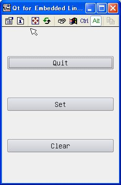
ภาพด้านล่างเป็นตัวอย่าง Qt ที่ปรับแต่งเพิ่มเติมเล็กน้อย หากเขียนทับด้วย ledbutton6 ใน Qtmini2440.zip ที่แนบมา และไฟล์ mcs ใน FPGAmini2440.zip จะสามารถควบคุม LED และอ่านค่าจากสวิตช์ได้
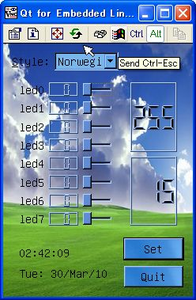
8 ติดตั้ง Web server
8.1 ติดตั้ง apache2, mysql, php
เปิดเครื่อง mini2440 แล้วพิมพ์คำสั่งต่อไปนี้ใน Tera Term
mini2440:~# apt-get update
mini2440:~# apt-get install apache2
mini2440:~# apt-get install libapache2-mod-auth-mysql
mini2440:~# apt-get install libapache2-mod-php5
mini2440:~# apt-get install mysql-client-5.0
mini2440:~# apt-get install mysql-server-5.0
mini2440:~# apt-get install php5
mini2440:~# apt-get install php5-mysql
mini2440:~# apt-get install phpmyadminสร้างไฟล์ /nfs/home/var/www/info.php บน Ubuntu โดยมีเนื้อหาดังนี้
<?php
phpinfo();
?>จากนั้นรีบูต mini2440 ตรวจสอบ IP ด้วย ifconfig แล้วเข้าถึง IP นั้นจากพีซี จะแสดงหน้าจอดังภาพ (ตัวอย่าง: http://192.168.1.4/info.php)
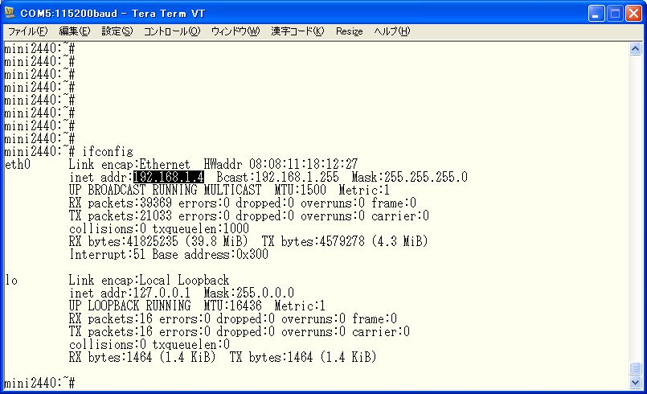
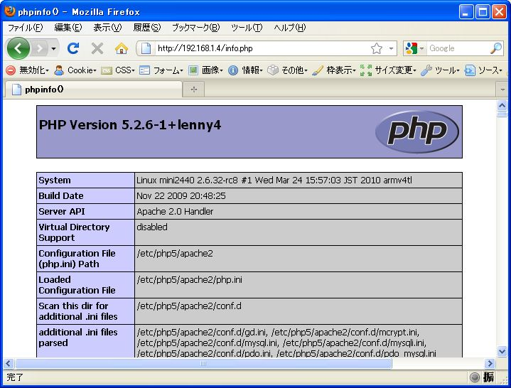
8.2 ควบคุม LED ด้วย PHP
ในตัวอย่างนี้ PHP จะเขียนค่า LED ลงใน led.txt ส่วนฝั่ง Qt จะตรวจสอบ led.txt ทุก 1 วินาที แล้วตั้งค่านั้นให้ LED
ขั้นตอนที่ 1: สร้างโค้ด PHP
cd /nfs/home/var/wwwสร้างไฟล์ led.php โดยมีเนื้อหาดังนี้
<?php
if (isset($_POST["quantity"])) {
$qty = $_POST["quantity"];
settype($qty, "integer");
$f = fopen("led.txt", "w+");
fwrite($f, "$qty\n");
fclose($f);
}
else {
$qty = 1;
}
?>
<form action="<?php echo $_SERVER['PHP_SELF']; ?>" method="POST">
Set led to:
<input type="text" name="quantity" size="2" value="<?php echo $qty?>">
<input type="submit" value="Enter">
</form>สร้างไฟล์ led.txt เปล่า แล้วตั้งสิทธิ์
sudo chmod 777 led.txtจากพีซี เข้า http://192.168.1.4/led.php ใส่ 123 แล้วกด Enter จากนั้นตรวจสอบเนื้อหาของ /nfs/home/var/www/led.txt จะพบว่ามีค่า 123 ถูกเขียนไว้
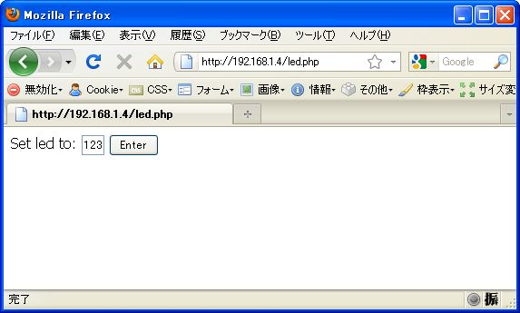
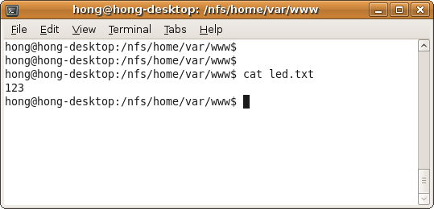
ขั้นตอนที่ 2: แก้ฝั่ง Qt
ในตัวอย่างหัวข้อ 8.2 ให้เปลี่ยนเนื้อหาของ ledsetting.h และ ledsetting.cpp ดังนี้ ส่วน main.cpp ใช้ตัวเดิม
ledsetting.h
//ledsetting.h
#ifndef LEDSETTING_H
#define LEDSETTING_H
#include <QWidget>
#include <QTimer>
class LEDsetting : public QWidget
{
Q_OBJECT
public:
LEDsetting(QWidget *parent = 0);
public slots:
void setLED();
void clearLED();
void setLEDNet();
private:
QTimer *autoUpdate;
};
#endifledsetting.cpp
//ledsetting.cpp
#include <QFile>
#include <QVariant>
#include "ledsetting.h"
LEDsetting::LEDsetting(QWidget *parent)
: QWidget(parent)
{
autoUpdate = new QTimer(this);
connect(autoUpdate, SIGNAL(timeout()), this, SLOT(setLEDNet()));
autoUpdate->start(1000);
}
void LEDsetting::setLED()
{
uchar *madr;
qint64 addr_map = 0x10000000;
qint64 size_map = 0x1;
QFile fd("/dev/mem");
fd.open(QIODevice::ReadWrite);
madr = fd.map(addr_map, size_map);
*madr = 0xff;
fd.unmap(madr);
fd.close();
}
void LEDsetting::clearLED()
{
uchar *madr;
qint64 addr_map = 0x10000000;
qint64 size_map = 0x1;
QFile fd("/dev/mem");
fd.open(QIODevice::ReadWrite);
madr = fd.map(addr_map, size_map);
*madr = 0x00;
fd.unmap(madr);
fd.close();
}
void LEDsetting::setLEDNet()
{
uchar *madr;
qint64 addr_map = 0x10000000;
qint64 size_map = 0x1;
char buf[8];
QFile fd("/dev/mem");
fd.open(QIODevice::ReadWrite);
QFile fd_led("/var/www/led.txt");
fd_led.open(QIODevice::ReadWrite);
// read ASCII textfile
fd_led.readLine(buf, sizeof(buf));
QVariant v;
v = buf;
int vdata = v.toInt();
madr = fd.map(addr_map, size_map);
*madr = vdata;
fd.unmap(madr);
fd.close();
fd_led.close();
}10 อื่น ๆ
8.3 Auto login
เปิดเครื่อง mini2440 แล้วติดตั้ง mingetty ใน Tera Term
mini2440:~# apt-get install mingettyแก้ไขเนื้อหาของไฟล์ /nfs/home/etc/inittab ให้เป็นบรรทัดต่อไปนี้
T0:123:respawn:/sbin/mingetty --autologin root ttySAC0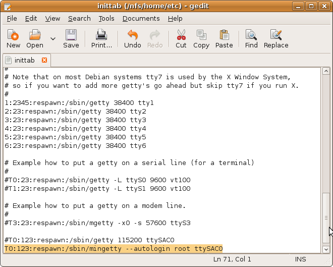
8.4 รันแอปพลิเคชันอัตโนมัติ
สร้างไฟล์ /nfs/home/etc/init.d/program โดยมีเนื้อหาดังนี้
#!/bin/bash
case $1 in
start)
cd /test
./hello -qws
;;
stop)
;;
esaccd /nfs/home/etc/init.d/
sudo chmod +x programเปิดไฟล์ /nfs/home/etc/profile แล้วเพิ่มบรรทัดต่อไปนี้ไว้ท้ายไฟล์
/etc/init.d/program start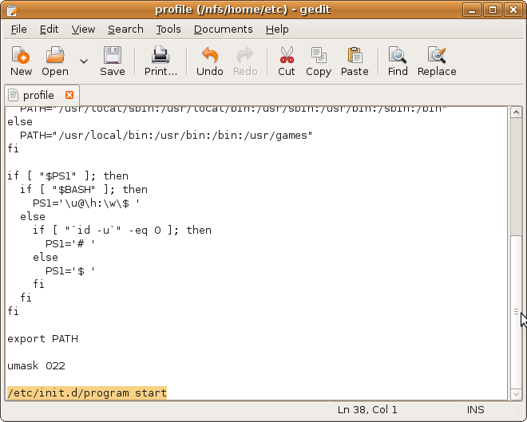
8.5 เปลี่ยนโลโก้ตอนบูต
ติดตั้ง netpbm บน Ubuntu
sudo apt-get install netpbmเปลี่ยนชื่อไฟล์ภาพที่ต้องการใช้เป็นโลโก้เป็น logo.jpg แล้วรันใน console ของ Ubuntu
jpegtopnm logo.jpg | ppmquant 224 | pnmtoplainpnm > logo_linux_clut224.ppmจะได้ไฟล์ logo_linux_clut224.ppm ให้เขียนทับที่ /drivers/video/logo/ แล้วคอมไพล์ kernel ใหม่ และแทนที่ uImage
cp logo_linux_clut224.ppm ~/kernel/mini2440/drivers/video/logo/
cd ~/kernel/mini2440
CROSS_COMPILE=arm-angstrom-linux-gnueabi- ARCH=arm make O=../kernel-bin/
~/uboot/mini2440/tools/mkimage -A arm -O linux -T kernel -C none -a 0x30008000 -e 0x30008000 -d ../kernel-bin/arch/arm/boot/zImage uImage
cp uImage /tftpboot/8.6 ใช้คีย์บอร์ดบน Qt
/dev/input ใน Tera Termevent2 เพิ่มขึ้นมา (ในสภาพแวดล้อมอื่นอาจไม่ใช่ event2)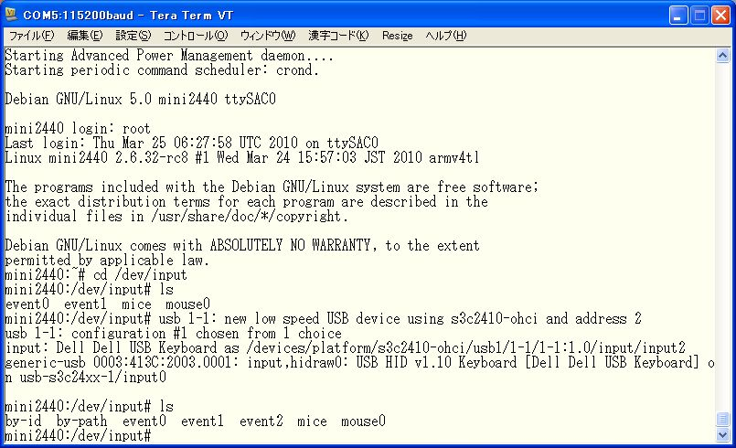
export QWS_KEYBOARD=linuxinput:/dev/input/event2 ลงในไฟล์ /nfs/home/etc/profile แล้วรีบูต mini2440 ก็จะใช้คีย์บอร์ด USB ได้เนื้อหาที่เกี่ยวข้องใน /etc/profile ทั้งหมดเป็นดังนี้
export TSLIB_TSEVENTTYPE=input
export TSLIB_CONSOLEDEVICE=none
export TSLIB_FBDEVICE=/dev/fb0
export TSLIB_TSDEVICE=/dev/input/event1
export TSLIB_CALIBFILE=/etc/pointercal
export TSLIB_CONFFILE=/etc/ts.conf
export TSLIB_PLUGINDIR=/usr/lib/ts
export QWS_MOUSE_PROTO=tslib:/dev/input/event1
export QWS_KEYBOARD=linuxinput:/dev/input/event2
export QTDIR=/usr/local/Qt📌 หมายเหตุ — ถ้าต้องการใช้เฉพาะเมาส์ ให้ใส่แค่ export QTDIR=/usr/local/Qt (ไม่ต้องใส่ TSLIB ฯลฯ)
8.7 ตัวอย่าง Qt/Embedded widgets
ดาวน์โหลด qt_embedded-widgets-1.1.0.tar.gz จากเว็บไซต์ http://qt.nokia.com/files/embedded-widget-demos/qt-embedded-widgets-source-and-documentation/view แล้วทำดังนี้
tar xvzf qt_embedded-widgets-1.1.0.tar.gz
cd embedded-widgets-1.1.0
qmake
make
sudo cp ./examples/catalog/catalog /nfs/home/test/รันใน Tera Term
mini2440:~# cd /test
mini2440:/test# ./catalog -qws -fn fixed -display "transformed:rot90" → ตั้งฟอนต์ และหมุนหน้าจอ 90 องศา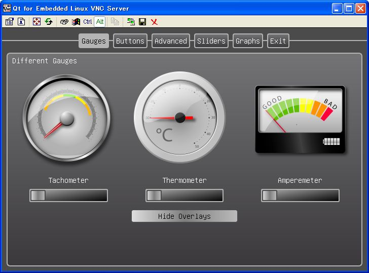
8.8 ตัวอย่าง Qt อื่น ๆ
8.9 แสดงภาษาญี่ปุ่นบน Qt
main.cpp
#include <QApplication>
#include <QPushButton>
#include <QFont>
#include <QVBoxLayout>
#include <QtGui>
#include "ledsetting.h"
class MyWidget : public QWidget
{
public:
MyWidget(QWidget *parent = 0);
};
MyWidget::MyWidget(QWidget *parent)
: QWidget(parent)
{
QByteArray encodedString = "終了(Quit)";
QTextCodec *codec = QTextCodec::codecForName("Shift-JIS");
QString decodedStr = codec->toUnicode(encodedString);
QLineEdit *editnihon = new QLineEdit;
editnihon->insert(decodedStr);
QLabel *label = new QLabel;
label->setText(decodedStr);
QPushButton *quit = new QPushButton;
quit->setText(decodedStr);
quit->setFont(QFont("Times", 20, QFont::Bold));
encodedString = "セット(Set)";
decodedStr = codec->toUnicode(encodedString);
QPushButton *set = new QPushButton;
set->setText(decodedStr);
set->setFont(QFont("Times", 20, QFont::Bold));
encodedString = "クリア(Clear)";
decodedStr = codec->toUnicode(encodedString);
QPushButton *clear = new QPushButton;
clear->setText(decodedStr);
clear->setFont(QFont("Times", 20, QFont::Bold));
LEDsetting *ledSetting = new LEDsetting;
connect(quit, SIGNAL(clicked()), qApp, SLOT(quit()));
connect(set, SIGNAL(clicked()), ledSetting, SLOT(setLED()));
connect(clear, SIGNAL(clicked()), ledSetting, SLOT(clearLED()));
QVBoxLayout *layout = new QVBoxLayout;
layout->addWidget(quit);
layout->addWidget(set);
layout->addWidget(clear);
layout->addWidget(editnihon);
layout->addWidget(label);
setLayout(layout);
}
int main(int argc, char *argv[])
{
QApplication app(argc, argv);
MyWidget widget;
widget.show();
widget.showFullScreen();
return app.exec();
}ledsetting.cpp
#include <QFile>
#include "ledsetting.h"
LEDsetting::LEDsetting(QWidget *parent)
: QWidget(parent)
{
}
void LEDsetting::setLED()
{
uchar *madr;
qint64 addr_map = 0x10000000;
qint64 size_map = 0x1;
QFile fd("/dev/mem");
fd.open(QIODevice::ReadWrite);
madr = fd.map(addr_map, size_map);
*madr = 0xff;
fd.unmap(madr);
fd.close();
}
void LEDsetting::clearLED()
{
uchar *madr;
qint64 addr_map = 0x10000000;
qint64 size_map = 0x1;
QFile fd("/dev/mem");
fd.open(QIODevice::ReadWrite);
madr = fd.map(addr_map, size_map);
*madr = 0x00;
fd.unmap(madr);
fd.close();
}ledsetting.h
//ledsetting.h
#ifndef LEDSETTING_H
#define LEDSETTING_H
#include <QWidget>
class LEDsetting : public QWidget
{
Q_OBJECT
public:
LEDsetting(QWidget *parent = 0);
public slots:
void setLED();
void clearLED();
};
#endif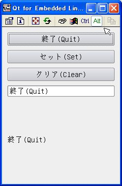
8.10 สื่อสารผ่าน TCP/IP ด้วย Qt
main.cpp
#include <QApplication>
#include "client.h"
int main(int argc, char *argv[])
{
QApplication app(argc, argv);
Client client;
client.show();
return client.exec();
}client.cpp
#include <QtGui>
#include <QtNetwork>
#include "client.h"
Client::Client(QWidget *parent)
: QDialog(parent)
{
led2Value = 0;
hostLabel = new QLabel(tr("&Server name:"));
portLabel = new QLabel(tr("S&erver port:"));
hostLineEdit = new QLineEdit;
portLineEdit = new QLineEdit;
portLineEdit->setValidator(new QIntValidator(1, 65535, this));
hostLineEdit->setText("192.168.1.19");
portLineEdit->setText("50001");
hostLabel->setBuddy(hostLineEdit);
portLabel->setBuddy(portLineEdit);
quitButton = new QPushButton(tr("Quit"));
netConnect = new QPushButton(tr("Connect"));
netClose = new QPushButton(tr("Close"));
netSendSC10 = new QPushButton(tr("SC10"));
netSendSC11 = new QPushButton(tr("SC11"));
led2 = new QPushButton(tr("LED2"));
lcdDisplay = new QPushButton(tr("lcdDisplay"));
rcvLineEdit = new QLineEdit;
rcvLineEdit->clear();
lcdLabel = new QLabel(tr("LCD Message:"));
lcdLineEdit = new QLineEdit;
lcdLineEdit->clear();
tcpSocket = new QTcpSocket(this);
connect(quitButton, SIGNAL(clicked()), this, SLOT(close()));
connect(netConnect, SIGNAL(clicked()), this, SLOT(tcpConnect()));
connect(netClose, SIGNAL(clicked()), this, SLOT(tcpClose()));
connect(netSendSC10, SIGNAL(clicked()), this, SLOT(tcpSendSC10()));
connect(netSendSC11, SIGNAL(clicked()), this, SLOT(tcpSendSC11()));
connect(led2, SIGNAL(clicked()), this, SLOT(tcpLED2()));
connect(lcdDisplay, SIGNAL(clicked()), this, SLOT(tcpLcdDisplay()));
connect(tcpSocket, SIGNAL(readyRead()), this, SLOT(tcpRead()));
QGridLayout *mainLayout = new QGridLayout;
mainLayout->addWidget(hostLabel, 0, 0);
mainLayout->addWidget(hostLineEdit, 0, 1);
mainLayout->addWidget(portLabel, 1, 0);
mainLayout->addWidget(portLineEdit, 1, 1);
mainLayout->addWidget(netConnect, 3, 0);
mainLayout->addWidget(netClose, 3, 1);
mainLayout->addWidget(netSendSC10, 4, 0);
mainLayout->addWidget(netSendSC11, 4, 1);
mainLayout->addWidget(led2, 5, 0, 1, 2);
mainLayout->addWidget(lcdLabel, 6, 0);
mainLayout->addWidget(lcdLineEdit, 6, 1);
mainLayout->addWidget(lcdDisplay, 7, 0, 1, 2);
mainLayout->addWidget(rcvLineEdit, 8, 0, 1, 2);
mainLayout->addWidget(quitButton, 9, 0, 1, 2);
setLayout(mainLayout);
setWindowTitle(tr("PIC-UIO TCP Client"));
portLineEdit->setFocus();
netClose->setEnabled(false);
netSendSC10->setEnabled(false);
netSendSC11->setEnabled(false);
led2->setEnabled(false);
}
void Client::tcpConnect()
{
blockSize = 0;
netConnect->setPalette(QPalette(Qt::red));
netConnect->setEnabled(false);
netClose->setEnabled(true);
netSendSC10->setEnabled(true);
netSendSC11->setEnabled(true);
led2->setEnabled(true);
tcpSocket->abort();
tcpSocket->connectToHost(hostLineEdit->text(), portLineEdit->text().toInt());
}
void Client::tcpClose()
{
netConnect->setEnabled(true);
netClose->setEnabled(false);
netSendSC10->setEnabled(false);
netSendSC11->setEnabled(false);
led2->setEnabled(false);
tcpSocket->close();
}
void Client::tcpSendSC10()
{
tcpSocket->write("SC10");
}
void Client::tcpSendSC11()
{
tcpSocket->write("SC11");
}
void Client::tcpLED2()
{
if (led2Value == 0)
{
led2Value = 1;
} else
{
led2Value = 0;
}
switch (led2Value)
{
case 0:
// change button color
led2->setAutoFillBackground(true);
led2->setStyleSheet("background-color: rgb(255, 0, 0); color: rgb(255, 255, 255)");
tcpSocket->write("SC20");
break;
case 1:
// change button color
led2->setAutoFillBackground(true);
led2->setStyleSheet("background-color: rgb(0, 255, 0); color: rgb(255, 255, 255)");
tcpSocket->write("SC21");
break;
default:
break;
}
}
void Client::tcpLcdDisplay()
{
QString temp = "SD";
temp.append(lcdLineEdit->text());
QByteArray lcdMessage = temp.toAscii();
tcpSocket->write(lcdMessage);
}
void Client::tcpRead()
{
rcvLineEdit->clear();
char rcvBuf[200];
tcpSocket->read(rcvBuf, sizeof(rcvBuf));
QString temp = QString(QLatin1String(rcvBuf));
rcvLineEdit->setText(temp);
}client.h
#ifndef CLIENT_H
#define CLIENT_H
#include <QDialog>
#include <QTcpSocket>
QT_BEGIN_NAMESPACE
class QDialogButtonBox;
class QLabel;
class QLineEdit;
class QPushButton;
class QTcpSocket;
QT_END_NAMESPACE
class Client : public QDialog
{
Q_OBJECT
public:
Client(QWidget *parent = 0);
private slots:
void tcpConnect();
void tcpClose();
void tcpSendSC10();
void tcpSendSC11();
void tcpLED2();
void tcpLcdDisplay();
void tcpRead();
private:
unsigned char led2Value;
quint16 blockSize;
QLabel *hostLabel;
QLabel *portLabel;
QLabel *lcdLabel;
QLineEdit *hostLineEdit;
QLineEdit *portLineEdit;
QLineEdit *rcvLineEdit;
QLineEdit *lcdLineEdit;
QPushButton *quitButton;
QPushButton *netConnect;
QPushButton *netClose;
QPushButton *netSendSC10;
QPushButton *netSendSC11;
QPushButton *lcdDisplay;
QPushButton *led2;
QTcpSocket *tcpSocket;
};
#endif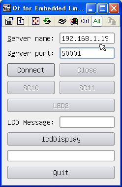